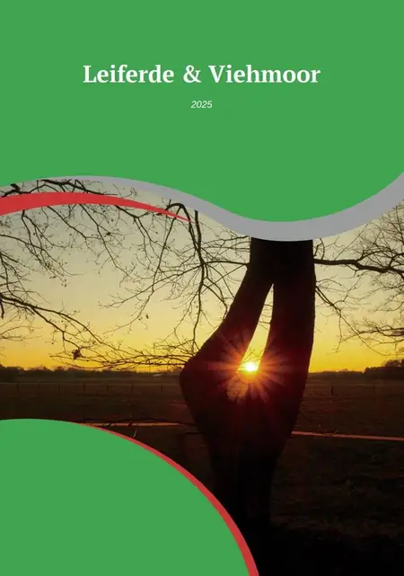
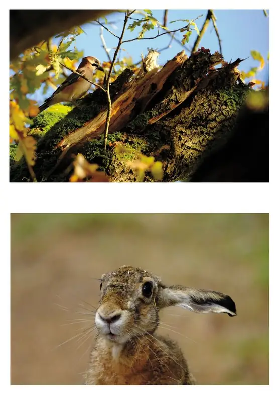
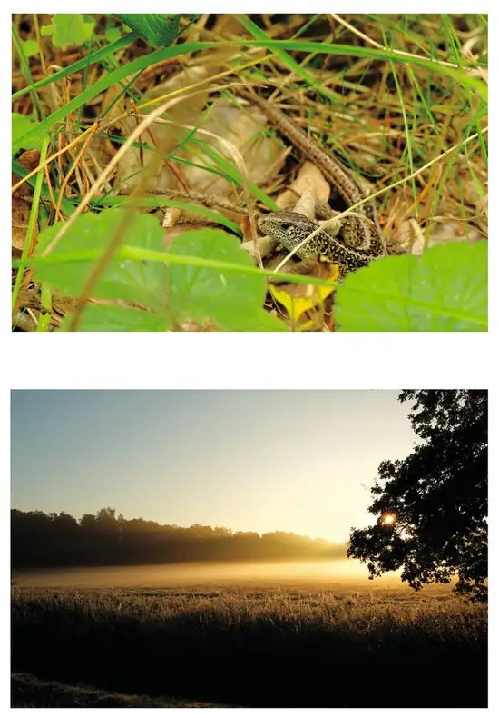

Publikation
Leiferde und das Viehmoor 2026
Die erste Ausgabe von WACH RECORDS. Eine fotografische Publikation über Landschaft, Tiere und Naturbeobachtung rund um Leiferde und das Viehmoor.

Cover & Innenseite
Einblicke in die Ausgabe
Das Cover und ausgewählte Innenseiten geben einen ersten Eindruck vom fotografischen und gestalterischen Aufbau der Publikation.


Format
DIN A5, 32 Seiten, Klammerheftung. Die Erstauflage ist als kleine fotografische Publikation konzipiert.
Bestellung
Der konkrete Preis und Bestellweg werden ergänzt, sobald Auflage, Versand und Zahlungsabwicklung feststehen.